Choosing a dog is a big decision. At PurrPets, we categorize breeds by their traits to help you find a companion that matches your lifestyle.
| Breeds | Photo | Traits/Specialties |
|---|---|---|
| Golden Retrievers | 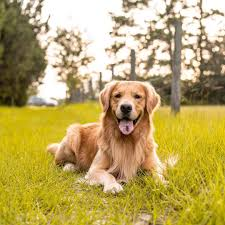 |
Friendly, active, and very trainable. |
| Labrador Retrievers | 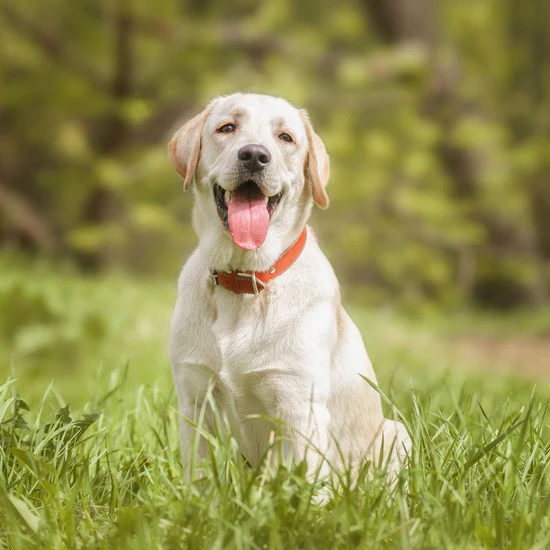 |
Versatile, intelligent, and highly active sporting breed known for its friendly demeanor, loyalty, and exceptional retrieving abilities. |
| Poodle | 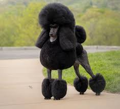 |
Highly intelligent, active, and hypoallergenic. |
| German Shepherd | 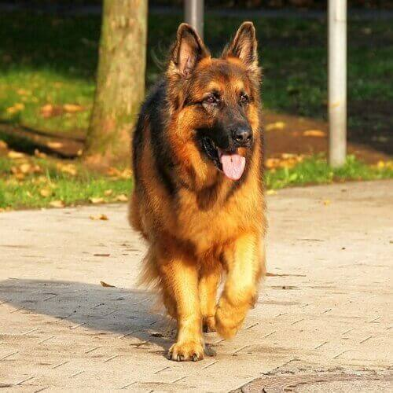 |
Most intelligent, versatile, and loyal |
| Beagles | 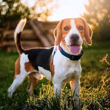 |
Great sense of smell and very vocal. |
| The "Corgi Loaf" (Herding Group) | 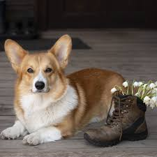 |
The Pembroke Welsh Corgi: A fan favorite for their short legs and big ears! |
| Dachshund | 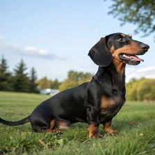 |
Small-statured hounds with bold, "big-dog" personalities. |
| Pomeranian | 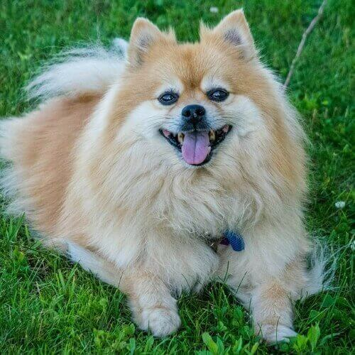 |
Fox-like faces, fluffy double coats, and large, spirited personalities. |
| Maltese Dog | 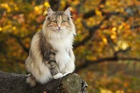 |
Luxurious, floor-length white coat, affectionate "lap dog" personality, and ancient history as a companion to aristocracy. |
| Shih Tzu | 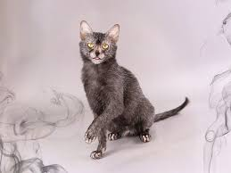 |
Affectionate nature, long flowing coat, and "chrysanthemum-like" face. |
| Chihuahua | 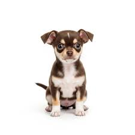 |
Small in size but big in personality! |
| Husky | 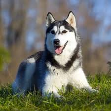 |
Strong, thick coats, and high energy levels. |
Remember that "bread" size matters! A Great Dane needs a lot of couch space, while a Yorkie can fit in a small carry-on bag.